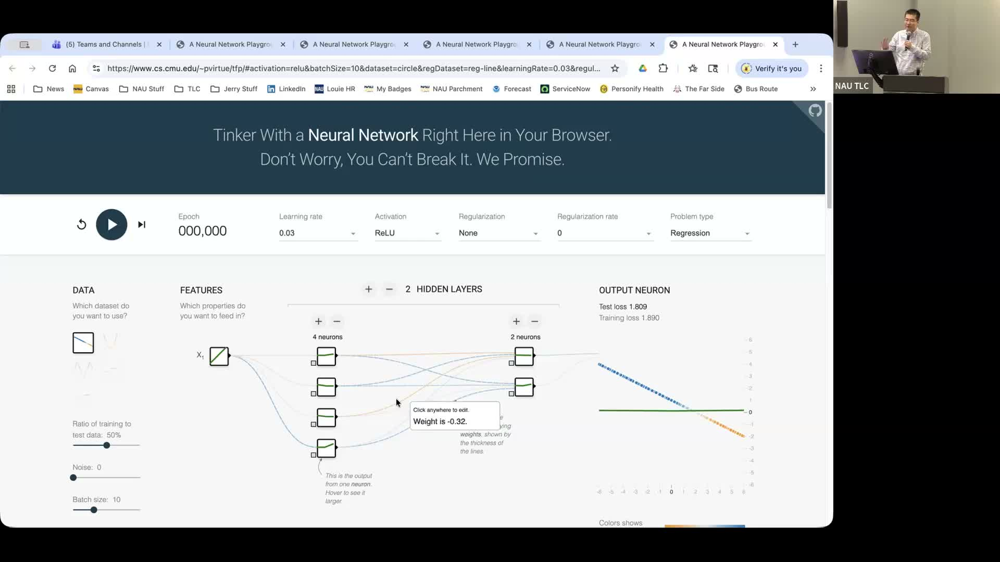

Empowering Business Students to Survive the AI Era
A practical, research-driven approach to AI literacy for undergraduate and graduate business analytics students.
Presented by Yichuan Wang, Assistant Professor of Practice, Business Analytics, School of Business, NAU
About This Project
Yichuan Wang arrived at NAU having previously worked as a research scientist for New York State's Department of Public Health, and he brought a practitioner's perspective to his business analytics courses: AI is not optional for students entering today's workforce, and the relevant skill is not programming but decision-making. His project built on three pillars. The first was practical instruction: hands-on work with local analytical tools before introducing higher-impact platforms like ChatGPT and Gemini, with the focus always on leveraging packages for machine learning and statistical modeling rather than building algorithms from scratch. The second pillar was industry collaboration, with guest speakers from Phoenix-based companies sharing how they actually apply AI in their organizations. The third was research integration, where Wang introduced his own work using natural language processing and text mining on financial documents to help students see how AI tools can extract meaningful signals from unstructured data.
Wang taught the project across two courses: an undergraduate business analytics course and a graduate-level section, reaching students from fall 2025 through spring 2026. His goal was to shift students' mental model of AI from something that does coding tasks to something that supports and accelerates human business decisions. By framing AI as a decision-making partner rather than a coding shortcut, students learn to ask better questions, interpret model outputs critically, and communicate AI-driven insights to non-technical stakeholders.
Project Highlights
